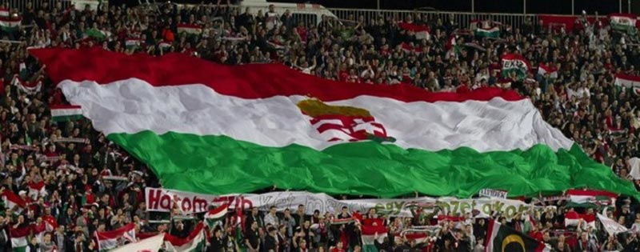
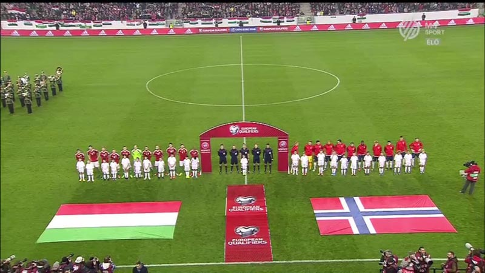
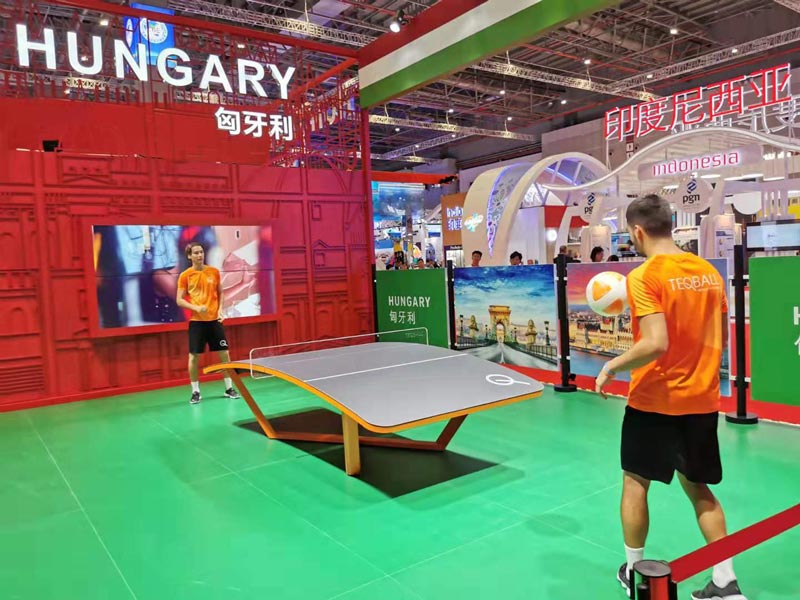

匈牙利体育
2020/11/6 19:23:39
详细介绍

匈牙利国家的体育生涯始于19世纪的第一批绅士运动俱乐部的建立，包括划船，帆船，骑马和滑冰。在本世纪末，人们开始接受并流行的体育运动是摔跤，骑自行车和足球。随着奥林匹克运动会的组织，更带动了其它体育项目。最受欢迎的运动是摔跤，皮划艇，手球，足球，击剑和水球。
1851年，第一届国际象棋比赛在伦敦举行，约瑟夫•申在比赛中获得第五名。1867年，巴拉顿湖游艇协会成立，这是帆船比赛的基础。1869年，布达佩斯滑冰协会成立。1875年，匈牙利田径俱乐部成立。1897年，布达佩斯锦标赛俱乐部的两支球队参加了第一场足球比赛。1894年，在国际奥林匹克委员会成立于巴黎，第二年成立匈牙利奥林匹克委员会，1896年七名匈牙利选手参加了第一届奥运会。1902年举行了第一届足球冠军赛，第二年摔跤冠军赛也开始了。1926年，第二届非官方国际象棋奥运会在布达佩斯举行，匈牙利队获胜。
一战后，曲棍球在匈牙利成立，而瓦罗斯利格溜冰场的开业也为此创造了机会。由于短时的积雪，冬季运动很难维持下去，少数冰球俱乐部在奥地利和斯洛伐克联赛中比赛。匈牙利男子曲棍球队首次参加欧洲锦标赛于1927年。匈牙利国家队是非常好的球队之一。
手球-匈牙利男子手球队和匈牙利女子手球队
匈牙利的手球不太受到关注，但它也是一种流行的运动。匈牙利女子手球队赢得了1965年的世界冠军和2000年的欧洲冠军。男子国家队的最好成绩是1986年获得的世界冠军银牌。在奥运会上，匈牙利女队获得了两枚铜牌（1976年，1996年）和一枚银牌（2000年）。男子国家队的奥运会最佳成绩是第四名（1980、1988、2004）。
篮球-匈牙利男子篮球队和匈牙利女子篮球队
男子国家队最大的成功是在1955年布达佩斯欧洲锦标赛上获得了金牌，在1953年的欧洲锦标赛上获得第二名，在1946年获得第三名。到目前为止，夏季奥运会最好的排名是1952和1960年的第9位。
女子团体最大的成功是在1950年获得了两枚欧洲冠军银牌，在1957年世界杯上获得了第五名。团队在1980年再次得到加强，并在10年中的5届欧洲锦标赛中四次获得铜牌。
足球-匈牙利国家橄榄球队和匈牙利女子国家橄榄球队
匈牙利最受欢迎的运动是足球，足球协会成立于1902年， 20世纪初， MTK是欧洲最好的球队之一，伊姆雷施洛瑟，伊什特万•托特和阿尔弗雷德•谢弗也是世界级的球员。在1938年世界杯上，匈牙利队与格萨•托迪，吉拉•森奇勒和吉乔治•萨罗西等大显身手，夺得亚军，仅次于意大利。
五十年代，国家领导层注重足球运动，将不同俱乐部的最佳球员汇集一起，这便构成了世界著名的金牌队的基础，他们在赫尔辛基成为奥运会冠军。1953年击败了强大的英格兰，并在1954年的FIFA世界杯上获得了第二名。但1956年事件后，黄金队在世界各地散落。匈牙利足球队一直以来都是经典球员中的佼佼者，1960年代，拉乔斯•蒂希，阿尔伯特•弗洛里安，拉兹洛•法泽卡斯，费伦茨•贝内，安塔尔•杜奈和玛塔•费尼维西都具有标志性意义的球员。1964年，他们成为奥运会冠军，并在欧洲锦标赛中获得第三名。1968年，他们再次成为奥运会冠军。
2010年以来，由于总理对足球运动的热爱，足球支出成倍增长，建造和翻修了许多体育场，建立了新的足球学院，其中包括最近成立的洪德足球学院。

象棋
国际象棋主要是一项个人运动，但大多数成功是以匈牙利男女象棋队的名义。1924年，匈牙利是国际象棋联合会的创始成员之一。1926年，布达佩斯举办了第二届非官方国际象棋奥林匹克运动会。1927年，举行了正式的国际象棋奥运会。 1927年的伦敦奥运会和1928年的海牙奥运会上，匈牙利队获得了第一名。1930年，第三届国际象棋奥运会上获得了银牌。1936年柏林非官方国际象棋奥林匹克运动会上，再次获得金牌，1937年的第七届官方国际象棋奥林匹克运动会上获得了金牌。
1978年国际象棋奥林匹克在布宜诺斯艾利斯拉乔斯•波特希的阵容中，该队领先于苏联获得了金牌。两年后，匈牙利国家队与苏联国家队并列第一，并列第二名。匈牙利象棋队在2017年匈牙利国际象棋奥运会上获得了五枚金牌，八枚银牌和两枚铜牌，在整体奖牌榜上仅次于苏联，美国和俄罗斯，位居第四。在1985年举行的国际象棋小队世锦赛上，匈牙利国家队获得了银牌。2017年，匈牙利在欧洲锦标赛的国际象棋团体中获得了四枚银牌和六枚铜牌。
女子棋队到1988年塞萨洛尼基组织的奥林匹克竞赛打破了苏联女子队30年的霸权，获得了金牌。2017年的奖牌榜上，两枚金牌外，五枚银牌和两枚铜牌，仅次于苏联，中国，格鲁吉亚和俄罗斯，位居第五。在欧洲国际象棋锦标赛上，匈牙利女队在2003年获得银牌。